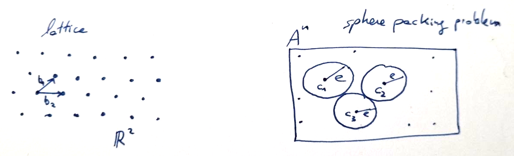
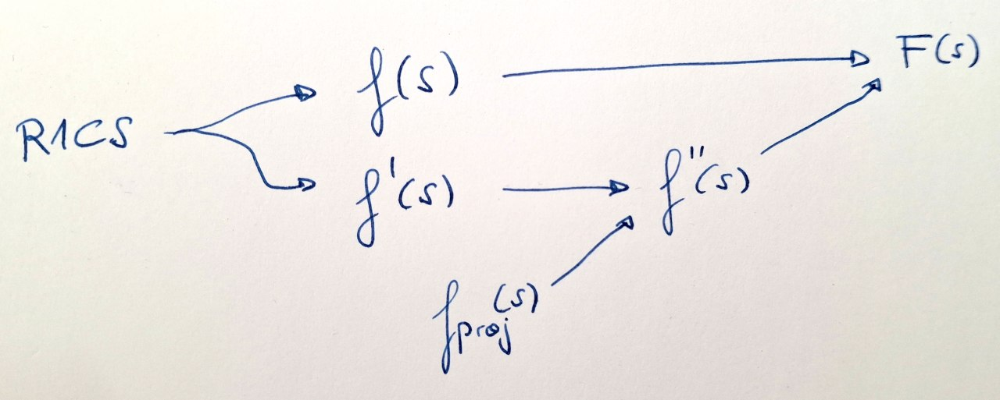
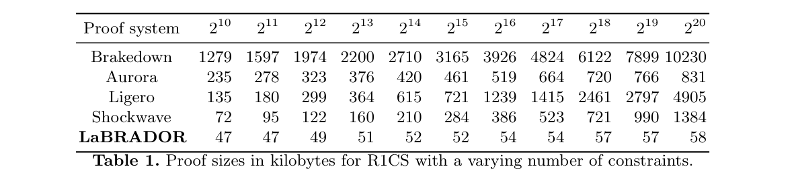

2026-06-11
I was curious on how (post-quantum) lattice-based SNARKs would work, and since I had a bit of time these past days, I’ve been reading the LaBRADOR paper, by Ward Beullens and Gregor Seiler. This post tries to explain the intuition and steps not explicitly shown in the paper, which helped me understanding it.
The structure of this post is the following:
The paper uses \(\vec{z} \in R^n\) to indicate a vector of length \(n\); for simplicity, in this post I’ll use \(z \in R^n\), since it is already clear that we’re working with a vector since we use \(\in R^n\).
Also, will use \(i \in [n]\) to indicate \(i = 1, \ldots, n\). And \((a_{ij})\) denotes the matrix with all the \(a_{ij}\) values as entries.
Intuitively, think of lattices as a discrete version of finite-dimensional vector spaces. In the same way that vector spaces span over some basis vectors \(\{ b_i ~|~ i \in [n] \}\) in a field, lattices span over the basis in a ring:
\[\mathcal{L} = \mathcal{L}(B) := B \cdot \mathbb{Z}^k = \{ \sum_{i=1}^k z_i \cdot b_i ~|~ z_i \in \mathbb{Z} \}\]
for a basis \(B = \{ b_1, \ldots, b_k \}\) (which since they are a basis, they are linearly independent). \(k\) is the rank of the basis, and we restrict our attention to full-rank lattices where \(k=n\).
Since we’re at the lattices realm, we work with the polynomial ring \(R_q = \mathbb{Z}_q[X]/(X^d + 1)\), and particularly in Labrador we pick \(q\) and \(d\) such that \(X^d + 1\) splits in two irreducible factors \(\pmod q\).
To provide a bit of more intuition, we can relate it to the algebraic coding theory concept of sphere packing problem, where in lattices we use short vectors and in coding theory we’re interested into low weighted codewords. Both in lattices and coding theory we have q-ary {lattices/matrices} respectively and also parity check {lattices/matrices} respectively.

MSIS problem stands for Module Short Integer Solution problem, and it is as follows:
Given a uniformly random matrix \(A \in^R R_q^{n \times m}\), with columns \(a_i \in R_q^n\), find a non-zero integer vector \(z \in R^m\) of norm \(||z|| \leq \beta\) such that
\[A \cdot z = \sum_i a_i \cdot z_i = 0 \in R_q^n\]
Remarks:
- without \(||z|| \leq \beta\), it is easy to find a solution via Gaussian elimination.
- \(\beta < q\), because otherwise \(z=(q, 0, \ldots, 0) \in R^m\) would always be a valid solution.
- \(\beta\) and \(m\) must be large enough so that a solution is guaranteed to exist, usually \(\beta \geq \sqrt{\hat{m}}\) and \(m \geq \hat{m}\) where \(\hat{m}\) is the smallest integer greater than \(n \log q\).
So overall when doing lattice-based cryptography, we will be interested into keeping the values short, aka. of small norm.
Specifically, Labrador relies on the hardness of finding short solutions to linear equations over polynomial rings.
With this in mind, usually a common trick used when doing operations is to decompose the values with small bases, so that we can represent them while keeping the norm low. We will also use this in Labrador.
We use a variant of the Ajtai commitments, where the messages are ring elements with small norms.
For a sampled random matrix \(A \in^R R_q^{n \times m}\), and given \(x \in R^m\) as input, where \(||x|| \leq \beta\), the Ajtai commitment is defined as \(cm := A \cdot x \in R_q^n\).
In other words, Ajtai commitments are essentially MSIS instances.
Notice that this is binding but it is not hiding, but we could make it hiding by appending a small random veector to \(x\).
As usual in SNARK schemes, we have the witness, denoted \(s= s_1, \ldots, s_r\), where each \(s_i \in R_q^n\), ie. the witness is a vector of \(r\) vectors of ring elements.
And since we’re at the lattices world and we’re using the assumptions of SIS and Module-SIS, the witness values are “short”, that is, their norm is bounded by some parameter: \(\sum_{i=1}^r || s_i ||_2^2 \leq \beta^2\).
While in other SNARK systems we worked with constraints in the shape of R1CS or Plonkish, LaBRADOR defines its constraints as
\[\boxed{ f(s) = \sum_{i, j}^r a_{ij} \langle s_i, s_j \rangle + \sum_{i=1}^r \langle \phi_i, s_i \rangle + b = 0 } \]
where \(s_i, \phi_i \in R_q^n\), and \(a_{ij}, b \in R_q\).
There are two different families of constraints, which are evaluated differently:
To avoid future doubts, let’s write down what are some constant values:
For the rest of this post, I’ll use colours to easily identify the different concepts across the various equations of the protocol.
We start from the original constraints. Those are both, the fully vanishing constraints of the family \(\mathcal{F}\) and the constraints where the constant term is zero of the family \(\mathcal{F}~'\):
\[ f(s) = \sum_{i, j}^r \textcolor{magenta}{a_{ij}} \langle s_i, s_j \rangle + \sum_{i=1}^r \langle \textcolor{blue}{\phi_i}, s_i \rangle - \textcolor{orange}{b} = 0 \]
\[ f'(s) = \sum_{i, j}^r \textcolor{magenta}{a'_{ij}} \langle s_i, s_j \rangle + \sum_{i=1}^r \langle \textcolor{blue}{\phi'_i}, s_i \rangle - \textcolor{orange}{b'} ~~such~that~~ ct(f'(s))=0 \]
In this blog post we will not cover how do we get from the R1CS constraints into the Labrador constraints shape, it can be found in the section 6 of the paper, but the main idea you need to have is that for different kinds of R1CS constraints (binary and non-binary constraints) we can obtain the \(f(s)\) and \(f'(s)\) Labrador constraints.
Once we have the original constraints, the idea is to do some reductions adding some more constraints, and then do multiple aggregation steps in order to end up having fewer constraints.

Labrador reduces proof size through four transformations unfolded over the next sections:
We name inner commitments the commitments to the original witness. Those commitments are
\[cm(s_i) = t_i = A \cdot s_i \in R_q^k ~~ \forall i \in [r]\]
But beware, sending all those \(r\) commitments would be too costly, so what the protocol does is it commits to them. The issue then is that \(t_i\) (the inner commitments) have coefficients that are \(\pmod q\), whose norm would be too big. The trick that the protocol uses, is the one we mentioned at the ‘a bit of background on lattices’ section, this is, to decompose them into \(t_1 \geq 2\) parts with small base \(b_1\) before committing, ie.
\[t_i = t_i^{(0)} + t_i^{(1)} b_1 + \ldots + t_i^{(t_1-1)} \cdot b_1^{t_1 -1}\]
with \(|| t_i^{(k)} ||_{\infty} \leq b_1/2\).
Now, let \(t \in R_q^{r \cdot t_1 \cdot k}\) be the concatenation of all decomposition parts of \(t_i^{(k)}\).
The commitment to the original commitment, is named outer commitment, and it is computed as
\[u_1 = B \cdot t\]
that is
\[u_1 = \sum_{i=1}^r \sum_{k=0}^{t_1-1} B_{ik} \cdot t_i^{(k)}\]
with \(||t|| \leq \gamma_1\) for a fixed norm parameter \(\gamma_1\).
Now, we want to show that \(s=(s_1, \ldots, s_r)\) satisfies the norm bound that we mentioned at the setup section. But sending \(r\) witness to the verifier would be again too costly, so the protocol reduces it through a projection.
Before going forward with the protocol, we will overview a trick that Labrador uses in order to compute inner products within the polynomial ring realm.
\(\sigma_{-1}(\pi_i)\) allows us to convert the coefficient-wise vector inner product into a polynomial multiplication relation.
Within the protocol, we want to compute \(p_j = \sum_{i=1}^r \langle \pi_i^{(j)}, s_i \rangle\), but we want to compute it using ring operations, concretely using polynomial multiplication.
Notice that in Labrador, vectors are encoded as polynomials in \(R_q\), ie
\[a=(a_1, \ldots, a_{n}) ~\longleftrightarrow~ a(x) = \sum_{k=1}^n a_k X^k \in R_q\]
Let \(a(x) = \sum_k a_k X^k,~~ b(x) = \sum_k b_k X^k\), then when computing \(a(x) \cdot b(x)\)
\[a(x) b(x) = (\sum_k a_k X^k) \cdot (\sum_k b_k X^k) = \sum_{i,j} a_i b_j X^{i+j}\]
which is different from the dot product that we’re interested in.
We want to only multiply together the coefficients of the equal-index terms, ie. \(a_0 b_0 + a_1 b_1 + \ldots + a_{n-1} b_{n-1}\). Thus we need some trick to force getting only the values when \(i=j\).
The trick is with \(\sigma_{-1}\) and getting the constant term of the result of multiplying \(\sigma_{-1}(a) \cdot b\).
Define the automorphism \(\sigma_{-1}\) as \(\sigma_{-1}(X) = X^{-1}\), so that \(\sigma_{-1}(a(X)) = a(X^{-1}) = \sum_i a_i X^{-i}\).
Then, when multiplying
\[\sigma_{-1}(a(X)) \cdot b(X) = \sum_{i,j} a_i b_j X^{j-i}\]
So, when \(j=i\), \(X\) will be \(0\); hence the result we’re interested in, the dot product result, will be contained in the constant terms of the result of that multiplication, where the \(X^{j-i}=X^0\).
In other words, \(\langle a, b \rangle = ct(\sigma_{-1}(a(X)) \cdot b(X))\), where \(ct\) denotes getting the constant term. That is, applied to the projection case, \(\langle \pi_i^{(j)}, s_i \rangle= ct(\sigma_{-1}(\pi_i^{(j)}) \cdot s_i)\).
The main idea here, is that we will use random linear projections that almost preserve the \(l_2\)-norm while allowing us to reduce the amount of equations to check, while keeping the bounds in place.
This relies on the Johnson-Lindenstrauss Lemma, which basically is used as instead of revealing all the witnes values \(s_1, \ldots, s_r\), the verifier samples a random linear map \(\Pi: \mathbb{Z}_q^{nd} \longrightarrow \mathbb{Z}_q^{256}\), and then the prover reveals only \(\Pi \cdot s\), which has many less elements than the original \(s\) vector.
And the Johnson-Lindenstrauss Lemma guarantees that \(||\Pi s||\) contains almost the same norm information as \(||s||\) with very high probability.
In practice, verifier samples \(\Pi_i = (\pi_i^{(j)})_j \in \chi^{256 \times nd}\), the prover computes \(p_j = \sum_{i=1}^r \langle \pi_i^{(j)}, s_i \rangle\), and the verifier checks that \(||p|| \leq \sqrt{128} \beta\).
So at this point, in the family \(\mathcal{F}~'\), we have the original constraints, without any projection related stuff:
\[ f'(s) = \sum_{i, j}^r \textcolor{magenta}{a'_{ij}} \langle s_i, s_j \rangle + \sum_{i=1}^r \langle \textcolor{blue}{\phi'_i}, s_i \rangle + \textcolor{orange}{b'} = 0 \]
And the projection constraints, which encode the check for the J-L projection in the Labrador constraints shape:
Notice that the projection equation, \(p_j = \sum_{i=1}^r \langle \sigma_{-1}(\pi_i^{(j)}), s_i \rangle\) is also
\[\sum_{i=1}^r \langle \sigma_{-1}(\pi_i^{(j)}), s_i \rangle - p_j = 0\]
which looks almost like the Labrador canonical constraints, we just need to add the \(a_{ij}\) part. We do it by setting \(a_{ij}=0\):
\[ f_{proj}(s) = \sum_{i, j}^r \textcolor{magenta}{0} \cdot \langle s_i, s_j \rangle + \sum_{i=1}^r \langle \textcolor{blue}{\sigma_{-1}(\pi_i^{(j)})}, s_i \rangle - \textcolor{orange}{p_j} = 0 \]
this is, we set \(\textcolor{magenta}{a_{proj,ij}=0}\), \(\textcolor{blue}{\phi_{proj,~i}=\sigma_{-1}(\pi_i^{(j)})}\) and \(\textcolor{orange}{b_{proj} = -p_j}\). In this way we have the projection constraints encoded as Labrador constraints.
Recall that both the original \(f'(s)\) constraints, and the projection constraints \(f_{proj}(s)\) are in the family \(\mathcal{F}~'\), so that we care about their constant term being zero, not the full polynomial vanishing.
At this point of the protocol, in the family \(\mathcal{F}~'\), we have \(L\) original constraints \(f'(s)\) and \(256\) projection constraints \(f_{proj}(s)\). The idea now is to linearly combine them into fewer constraints.
The verifier sends the challenges \(\psi^{(k)} \in^R (\mathbb{Z}_q)^L\) and \(w^{(k)} \in^R (\mathbb{Z}_q)^{256}\), which the prover will use to compute the random linear combinations of the constraints we have so far, which preserves the validity while reducing the number of constraints.
The prover linearly combines
as follows
\[ f''^{(k)}(s) = \sum_{l=1}^L \psi_l^{(k)} \cdot f'^{(l)}(s) + \sum_{j=1}^{256} w_j^{(k)} \cdot f_{proj}(s) = \\ = \underbrace{ \sum_{l=1}^L \psi_l^{(k)} \cdot f'^{(l)}(s) }_{(i.)~ \text{lin.comb. of the original constraints}} + \underbrace{ \sum_{j=1}^{256} w_j^{(k)} \cdot ( \langle \sigma_{-1}(\pi_i^{(j)}), s_i \rangle -p_j) }_{(ii.)~ \text{lin.comb. of the 256 projection constraints}} \]
First we will tackle \((i.)\). Recall that \(f'(s) = \sum_{i, j}^r a_{ij}' \cdot \langle s_i, s_j \rangle + \sum_{i=1}^r \langle \phi_i', s_i \rangle + b'\), so by distributing the challenge \(\psi_l^{(k)}\),
\[ (i.):~ \sum_l \psi_l^{(k)} \cdot f'^{(l)}(s) = \sum_l \psi_l^{(k)} \cdot \left( \sum_{i,j} a_{ij}^{'(l)} \cdot \langle s_i, s_j \rangle + \sum_i \langle \phi_i^{'(l)}, s_i \rangle - b_0^{'(k)} \right)\\ = \underbrace{ \sum_{i,j} \left( \sum_l \psi_l^{(k)} \cdot a_{ij}^{'(l)} \right) \cdot \langle s_i, s_j \rangle }_{(i.A)} \underbrace{ + \sum_i \left( \sum_l \psi_l^{(k)} \cdot \phi_i^{'(l)} \right) \cdot s_i - \sum_l \psi_l^{(k)} \cdot b_0^{'(l)} }_{(i.B)} \]
For the \((i.A)\) part, we can set
\[\textcolor{magenta}{a_{ij}^{''(k)}} = \sum_{l=1}^L \psi_l^{(k)} \cdot a_{ij}^{'(l)}\]
so that:
\[ (i.A):~ \sum_{i,j} \left( \sum_l \psi_l^{(k)} \cdot a_{ij}^{'(l)} \right) \cdot \langle s_i, s_j \rangle ~=~ \sum_{i,j} \textcolor{magenta}{a''^{(k)}_{ij}} \cdot \langle s_i, s_j \rangle \]
Now tackle \((ii.)\):
\[ (ii.):~ \sum_{j=1}^{256} w_j^{(k)} \cdot \big( \langle \sigma_{-1}(\pi_i^{(j)}), s_i \rangle - p_j \big) = \sum_i \langle \sum_j w_j^{(k)} \sigma_{-1}(\pi_i^{(j)}),~ s_i \rangle - \sum_j w_j^{(k)} \cdot p_j \]
Now let’s put together \((i.B)\) and \((ii)\):
\[ \overbrace{ \textcolor{green}{ \sum_i ( \sum_l \psi_l^{(k)} \cdot \phi_i^{'(l)} ) \cdot s_i } \textcolor{blue}{ - \sum_l \psi_l^{(k)} \cdot b_0^{'(l)} } }^{(i.B)} + \overbrace{ \textcolor{orange}{ \sum_i \langle \sum_j w_j^{(k)} \sigma_{-1}(\pi_i^{(j)}),~ s_i \rangle } \textcolor{red}{ - \sum_j w_j^{(k)} \cdot p_j } }^{(ii.)} =\\~\\ = \sum_i \textcolor{green}{ \big\langle \sum_l \psi_l^{(k)} \cdot \phi_i^{'(l)} } + \textcolor{orange}{ \sum_l w_j^{(k)} \cdot \sigma_{-1}(\pi_i^{(j)}), s_i \big\rangle } + \textcolor{blue}{ \sum_l \psi_l^{(k)} \cdot b_0^{'(l)} } + \textcolor{red}{ \sum_j w_j^{(k)} \cdot p_j } \]
without colors:
\[ = \sum_i \big\langle \underbrace{ \sum_l \psi_l^{(k)} \cdot \phi_i^{'(l)} + \sum_l w_j^{(k)} \cdot \sigma_{-1}(\pi_i^{(j)}) }_{\phi_i^{''(k)}}, s_i \big\rangle + \underbrace{ \sum_l \psi_l^{(k)} \cdot b_0^{'(l)} + \sum_j w_j^{(k)} \cdot p_j }_{b_0^{''(k)} ~\text{(constant term)}} \\ = \sum_{i=1}^r \langle \textcolor{blue}{\phi_i^{''(k)}}, s_i \rangle - \textcolor{orange}{b_0^{''(k)}} \]
So by putting it together with the \((i.A)\) part, we get the full \(f''^{(k)}(s)\) aggregated constraint:
\[ \boxed{ f''^{(k)}(s) = \overbrace{ \sum_{i,j=1}^r \textcolor{magenta}{a_{ij}^{''(k)}} \cdot \langle s_i, s_j \rangle }^{(i.A)} + \overbrace{ \sum_{i=1}^r \langle \textcolor{blue}{\phi_i^{''(k)}}, s_i \rangle - \textcolor{orange}{b_0^{''(k)}} }^{(i.B) + (ii.)} } \]
such that \(ct(f''^{(k)}(s)) = 0\).
Right now, \(f''^{(k)}(s)\) is a constraint where only the constant term evaluates to zero (ie. it is a constraint from the \(\mathcal{F}'\) family). However, for the next aggregation step, we need it to be a completely vanishing polynomial, that is, a function from the \(\mathcal{F}\) family.
To do so, the prover takes the integer constant \(\textcolor{orange}{b_0^{''(k)}}\) and extends it into a full polynomial \(\textcolor{orange}{b''^{(k)}}\) so that the newly formed function \(f''^{(k)}(s)\) evaluates exactly to zero. The prover then sends these full \(b''^{(k)}\) polynomials to the verifier.
To ensure that the prover isn’t cheating by just making up a polynomial that matches the equation, the verifier will check that the constant coefficient of the prover’s \(b''^{(k)}\) corresponds to the \(b_0^{''(k)}\) value that the verifier computes from the public values and challenges, that is \(b_0^{''(k)} \stackrel{?}{=} \langle w^{(k)}, p \rangle + \sum_{l=1}^L \psi_l^{(k)} b_0^{'(l)}\).
Recall that along these past steps, we’ve defined the new \(a_{ij}^{''(k)},~ \phi_i^{''(k)},~ b''\) as
\[\textcolor{magenta}{a_{ij}^{''(k)}} = \sum_{l=1}^L \psi_l^{(k)} \cdot \textcolor{magenta}{a_{ij}^{'(l)}}\]
\[\textcolor{blue}{\phi_i^{''(k)}} = \sum_{l=1}^L \psi_l^{(k)} \textcolor{blue}{\phi_i^{'(l)}} + \sum_{j=1}^{256} w_j^{(k)} \cdot \sigma_{-1}(\textcolor{blue}{\pi_i^{(j)}})\]
\[\textcolor{orange}{b''} = \sum_{i,j=1}^r \textcolor{magenta}{a_{ij}^{''(k)}} \cdot \langle s_i, s_j \rangle + \sum_{i=1}^r \langle \textcolor{blue}{\phi_i^{''(k)}}, s_i \rangle\]
Till here, the 1st aggregation step has taken a random linear combination of the original constant-vanishing constraints and the projection constraints, and linearly combined them into Labrador-shaped constraints.
Now the idea is to random linearly combine the original fully vanishing constraints \(f(s)\), and separately the aggregated \(f''(s)\) constraints that come from the original constant-vanishing constraints (\(f'(s)\)) and projection constraints (\(f_{proj}(s)\)).
The verifier sends the challenges \(\alpha \in^R R_q^K,~ \beta \in^R R_q^{\lceil 128/\log{q} \rceil}\).
Then the prover will compute
\[ F(s) = \sum_{k=1}^K \alpha_k \cdot f^{(k)}(s) + \sum_{k=1}^{\lceil 128/ \log q \rceil} \beta_k \cdot f''^{(k)}\\ = \sum_{k=1}^K \alpha_k \cdot \left( \sum_{i, j}^r a_{ij} \langle s_i, s_j \rangle + \sum_{i=1}^r \langle \phi_i, s_i \rangle + b \right) + \sum_{k=1}^{\lceil 128/ \log q \rceil} \beta_k \cdot \left( \sum_{i,j}^r a_{ij}^{''(k)} \langle s_i, s_j \rangle + \sum_i^r \langle \phi_i^{''(k)}, s_i \rangle - b_0^{''(k)} \right) \]
distribute \(\alpha_k\) and \(\beta_k\) while keeping the witness values separated
\[ = \sum_{i,j=1}^r \underbrace{ \left( \sum_{k=1}^K \alpha_k a_{ij}^{(k)} + \sum_{k=1}^{\lceil 128/\log q \rceil} \beta_k a_{ij}''^{(k)} \right) }_{a_{ij}} \langle s_i, s_j \rangle + \sum_{i=1}^r \langle \underbrace{ \left( \sum_{k=1}^K \alpha_k \phi_i^{(k)} + \sum_{k=1}^{\lceil 128/\log q \rceil} \beta_k \phi_i''^{(k)} \right) }_{\phi_i}, s_i \rangle \\ - \underbrace{ \left( \sum_{k=1}^K \alpha_k b^{(k)} + \sum_{k=1}^{\lceil 128/\log q \rceil} \beta_k b''^{(k)} \right) }_{b} \]
\[ \boxed{ F(s) = \sum_{i,j} a_{ij} \langle s_i, s_j \rangle + \sum_i \langle \phi_i, s_i \rangle - b } \]
again, a Labrador-shaped constraint, which in this case encodes the linear combinations of the original \(f^{(k)}(s)\) constraints and the \(f''^{(k)}(s)\) aggregated constraints, which for a valid witness it satisfies \(F(s)=0\).
Now, at this point we have \(r\) witness vectors, which in practice it is too much to deal with. Thus, instead of opening the individual inner commitments \(t_i\) by sending all the \(s_i\) and then checking the constraint \(F(s)\), the prover opens a random linear combination
\[z = \sum_{i=1}^r c_i \cdot s_i\]
and its respective committed version
\[\overline{z} = \sum_{i=1}^r c_i \cdot t_i\]
with challenge polynomials \(c_i \in R_q\).
Then the verifier checks
\[A \cdot z = \sum_{i=1}^r c_i \cdot t_i\]
which should match since \(t_i\) are the commitments to \(s_i\) such that \(t_i = A s_i\), so that
\[A \cdot z = A \cdot \sum_i^r c_i s_i = \sum_i c_i \cdot (A s_i) = \sum_i c_i t_i\]
And also checks that \(||z|| \leq \gamma\) which comes from the instantiation parameters, to ensure small norm.
The following step is verifying that \(F(s)=0\), but recall that \(F(s) = \sum_{i,j} a_{ij} \langle s_i, s_j \rangle + \sum_i \langle \phi_i, s_i \rangle - b\), and the verifier does not know the values of \(s_i\) hence can not compute it.
To do the check, both prover and verifier use what the paper calls garbage polynomials, but intuitively we can think about them as some auxiliary polynomials to do this final check.
Let the garbage polynomials be
\[g_{ij}= \langle s_i, s_j \rangle,~~~~ h_{ij} = \frac{1}{2} ( \langle \phi_i, s_j \rangle + \langle \phi_j, s_i \rangle )\]
for \(i,j \in [r]\).
The prover will commit to those polynomials early on, before the challenges \(c_i\) are generated, so that the prover is not able to select the garbage polynomials based on knowledge of the challenges, which would allow the prover to cheat.
Observation: the paper does the commitment to the “garbage” polynomials \(g\) and \(h\) differently at the protocol conceptual explanation of page 14 and at the protocol description of Figure 2 at page 17.
The conceptual explanation describes the second outer commitment \(u_2\) as
\[u_2 = C g + D h\]
but later at the protocol description, the commitment to \(g\) is moved to the outer commitment \(u_1\), leaving only the commitment to \(h\) at \(u_2\). So the outer commitments end up being
\[u_1 = B \cdot t + C \cdot g = \sum_{i=1}^r \sum_{k=0}^{t_1-1} B_{ik} t_i^{(k)} + \sum_{i \leq j} \sum_{k=0}^{t_2-1} C_{ijk} g_{ij}^{(k)}\]
\[u_2 = D \cdot h = \sum_{i \leq j} \sum_{k=0}^{t_1-1} D_{ijk} h_{ij}^{(k)}\]
This is done because the \(g_{ij}\) polynomials are independent of all challenges, thus they can be computed at the very beginning of the protocol and included in \(u_1\), allowing a slightly better security proof.
Then, the verifier will do the following checks:
\[(i.)~~~ <z, z> = \sum_{i,j=1}^r g_{ij} c_i c_j\]
\[(ii.)~~~ \sum_{i=1}^r \langle \phi_i, z \rangle \cdot c_i = \sum_{i,j=1}^r h_{ij} c_i c_j\]
\[(iii.)~~~ \sum_{i,j=1}^r a_{ij} g_{ij} + \sum_{i=1}^r h_{ii} -b = 0\]
Where \((i.)\) and \((ii.)\) are to check the correctness of \(g_{ij}\) and \(h_{ij}\) respectively, and \((iii.)\) is checking the \(F(s)=0\) equality through the garbage polynomials \(g_{ij}, h_{ij}\).
At this point, the prover has sent the proof which consists of \((z, t, h, g)\), and the norm checks get grouped into a single norm check \(||z||^2 + ||t||^2 + ||g||^2 + ||h||^2 \leq \gamma^2 + \gamma_1^2 + \gamma_2^2\).
The idea now, is to recurse, encoding the protocol checks into new Labrador constraints, and then performing again the protocol.
First, we simplify the target relation, let \(v = t || g || h \in R_q^m\), so that the norm check becomes
\[||z||^2 + ||v||^2 \leq \gamma^2 + \gamma_1^2 + \gamma_2^2\]
Now we decompose the witness \(z = z^{(0)} + b \cdot z^{(1)}\), with \(z^{(0)}, z^{(1)} \in R_q^n\), to keep the coefficients with small norm.
Then, the quadratic dot product becomes
\[\langle z, z \rangle = \langle z^{(0)}, z^{(0)} \rangle + 2b \langle z^{(0)}, z^{(1)} \rangle + b^2 \langle z^{(1)}, z^{(1)} \rangle\]
and we can do the norm check as \(||z^{(0)}||^2 + ||z^{(1)}||^2 + ||v||^2 \leq \frac{2}{b^2} \gamma^2 + \gamma_1^2 + \gamma_2^2 = (\beta')^2\), which implies \(||z|| = ||z^{(0)} + b z^{(1)} || \leq (1+b)\beta'\).
Write the vectors \(z^{(0)}, z^{(1)}, v\) as concatenations of vectors:
\[ z^{(0)} = s_1 || s_2 || \ldots || s_{\nu}\\ z^{(1)} = s_{\nu+1} || \ldots || s_{2\nu}\\ v = s_{2\nu+1} || \ldots || s_{2\nu+ \mu} \]
that is \(r' = 2 \nu + \mu\) vectors in total.
Observe that the final verifications from the previous section, the checks \((i.),~ (ii.),~ (iii.)\) can be done as dot product constraints (ie. Labrador constraints):
from the check \((i.)\), \(\langle z, z \rangle = \sum_{i,j=1}^r g_{ij} \cdot c_i \cdot c_j\), since we’ve decomposed \(z = z^{(0)} + b z^{(1)}\) then we have
\[ \langle z, z \rangle = \langle z^{(0)} + b z^{(1)}, z^{(0)} + b z^{(1)} \rangle\\ = \langle z^{(0)}, z^{(0)} \rangle + 2b \langle z^{(0)}, z^{(1)} \rangle + b^2 \langle z^{(1)}, z^{(1)} \rangle \]
that is, three separate dot products. Then we place
\[ z^{(0)} ~\text{into}~ s_1', \ldots, s'_{\nu}\\ z^{(1)} ~\text{into}~ s_{\nu+1}', \ldots, s'_{2\nu} \]
so that
\[\langle z^{(0)}, z^{(0)} \rangle = \langle s_1', s_1' \rangle + \langle s_2', s_2' \rangle + \ldots + \langle s_{\nu}', s_{\nu}' \rangle\]
and similarly with \(\langle z^{(1)}, z^{(1)} \rangle\)
\[\langle z^{(1)}, z^{(1)} \rangle = \langle s_{\nu+1}', s_{\nu+1}' \rangle + \ldots + \langle s_{2\nu}', s_{2\nu}' \rangle\]
and
\[\langle z^{(0)}, z^{(1)} \rangle = \langle s_1', s_{\nu+1}' \rangle + \langle s_2', s_{\nu+2}' \rangle + \ldots + \langle s_{\nu}', s_{2\nu}' \rangle\]
So that now, it is a matter of setting appropriate \(a_{ij}\) values to reshape the original check into a Labrador-shaped constraint:
Therefore, we can perform the \(\langle z, z \rangle\) with the decompositions \(z^{(0)},~ z^{(1)}\).
The next check is \((ii.)\), \(\sum_{i=1}^r \langle \phi_i, z \rangle \cdot c_i = \sum_{i, j = 1}^r h_{ij} c_i c_j\). Reshape it into
\[\sum_{i=1}^r \langle \phi_i \cdot c_i, z \rangle - \sum_{i, j = 1}^r (c_i c_j)\cdot h_{ij} = 0\]
and, recall that we set
\[ z^{(0)} = s_1 || s_2 || \ldots || s_{\nu}\\ z^{(1)} = s_{\nu+1} || \ldots || s_{2\nu}\\ v = s_{2\nu+1} || \ldots || s_{2\nu+ \mu} \]
also recall that \(v=t || g || h\). Thus, similarly as for the check \((i.)\),
For the check \((iii.)\), \(\sum a_{ij} g_{ij} + \sum h_{ii} - b =0\), recall again that \(g_{ij}, h_{ij}\) are inside \(v\), so it is just a matter of setting \(a_{ij}=a_{ij}\) and \(a_{ij}=1\) at their corresponding positions, and \(b^{(k)}=b\).
With this, we can encode the checks \((i.),~ (ii.),~ (iii.)\) into the Labraddor constraint shape
\[g^{(k)}(s') = \sum_{i,j=1}^{r'} a_{ij}^{(k)} \langle s_i', s_j' \rangle + \sum_i^{r'} \langle \phi_i^{(k)}, s_i' \rangle - b^{(k)} = 0\]
with \(s' := z^{(0)} || z^{(1)} || v\), where \(v=t ||g||h\).
Similarly we encode he commitments checks. We had \(Az = \sum c_i t_i\), which we can do in a dot product constraint as
\[\langle A_{row}, z \rangle - \sum c_i \cdot ~ (t_i)_{row} = 0\]
which in a similar fashion as the checks \((i.), (ii.), (iii.)\), we can reshape it into a Labrador constraint, since the inner commitments \(t_i\) are placed inside \(v\).
And for the outer commitments \(u_1,~ u_2\), as we saw in the section [4. Amortization] we want
\[ u_1 = B \cdot t + C \cdot g\\ u_2 = D \cdot h \]
which we can encode as
\[ \langle B_{row}, t \rangle + \langle C_{row}, g \rangle = (u_1)_{row}\\ \langle D_{row}, h \rangle = (u_2)_{row} \]
which, as before, we can also reshape into the dot product Labrador constraints.
The paper mentions that 6 or 7 iterations of the recursive protocol give the best results, where at each recursion the witness shrinks down from \(|s^{(i)}|\) into \(|s^{(i)}|^{2/3}\).
It has been very interesting to see how a lattice-based SNARK works, its machinery and tricks. Also, Labrador is of special interest because it was a big step forward on lattice-based SNARKs since it has good proof sizes; asymptotically of \(\mathcal{O}(\log n)\), and for \(2^{16}\) R1CS constraints, the paper reports proof sizes of 54 kbytes.

An interesting thing in Labrador is the capacity to mix binary and non-binary R1CS constraints, which get reshaped into the \(f(s)\) and \(f'(s)\) Labrador constraints. This is nice, because for many zk-circuits we want to prove binary-based operations (such as traditional hashes), while doing arithmetic logic, and in Labrador we can mix both in parallel.
Other post-quantum safe SNARK schemes are based on hashes (eg. STARKs), widely used in the industry; but what seems interesting of the lattice-based cryptography is that lattices have more algebraic structure, and while a bit less developed in production than hash based proofs, they have interesting potential.
I’ve enjoyed studying Labrador, and definitely I’ll keep exploring other lattice-based schemes while also going a bit down to the math behind them.